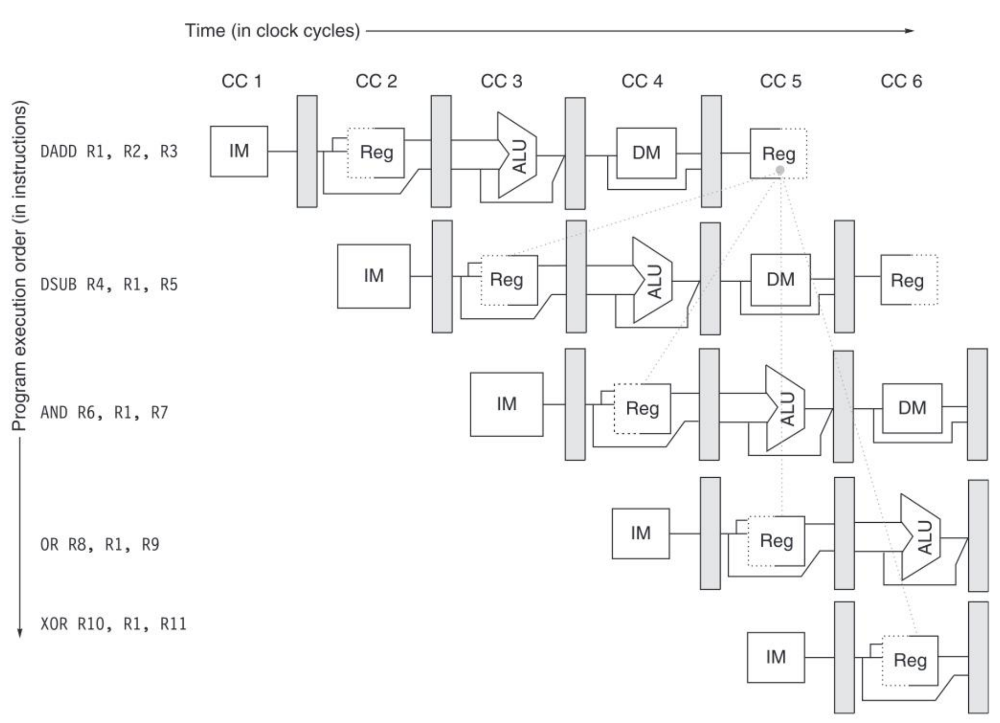
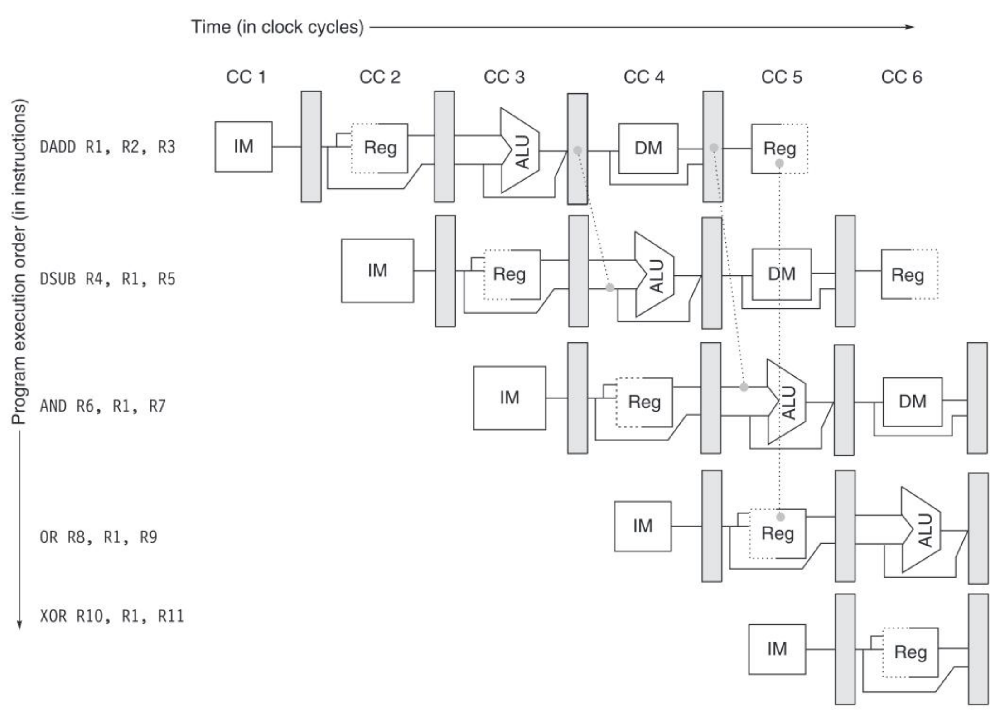
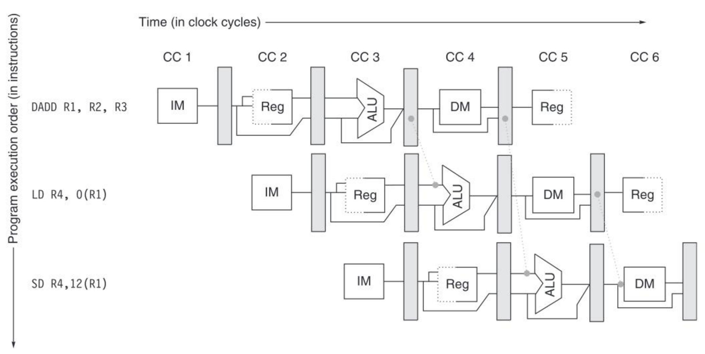
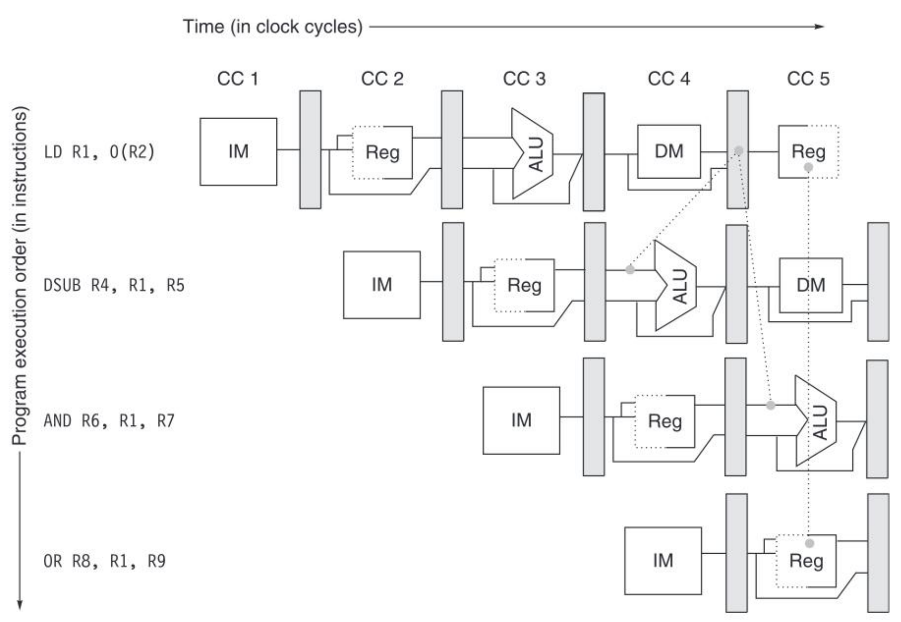
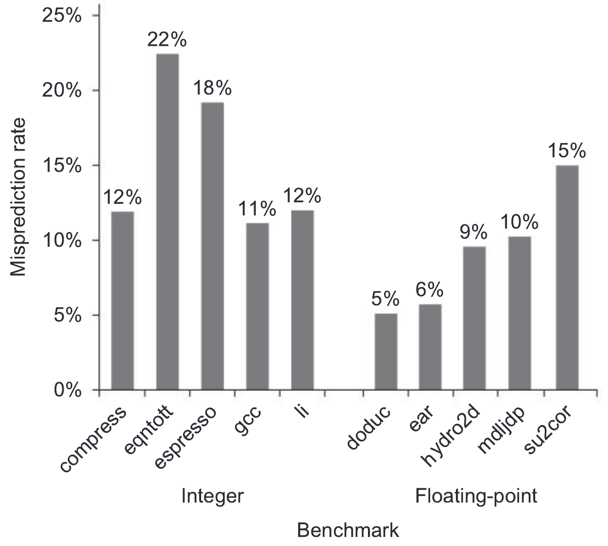
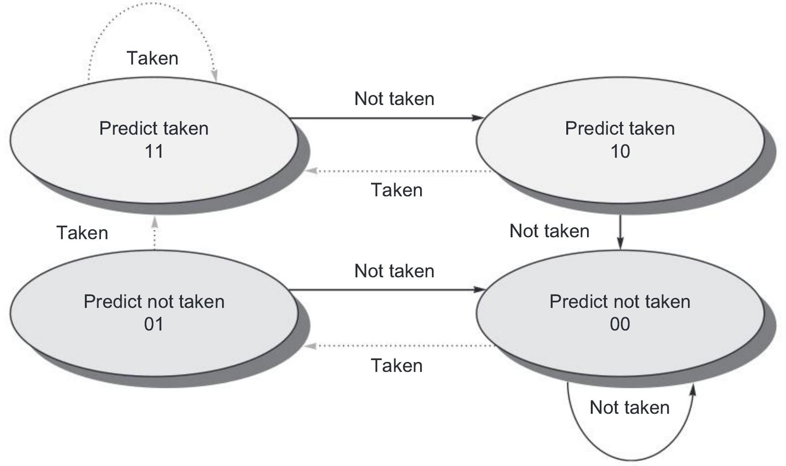
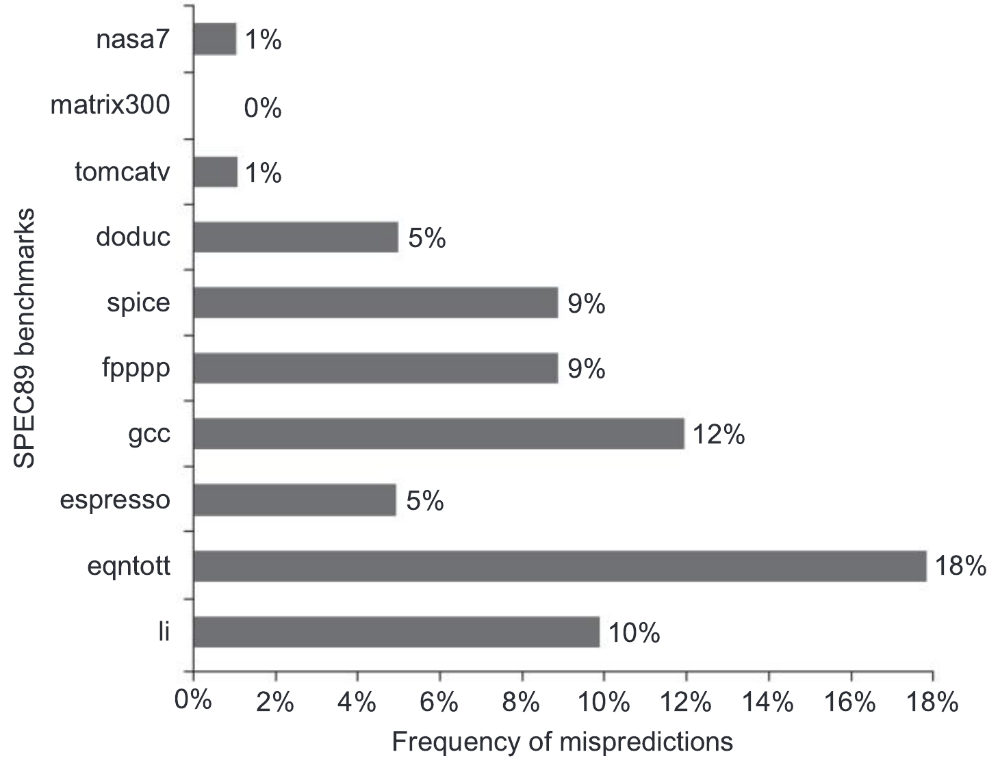
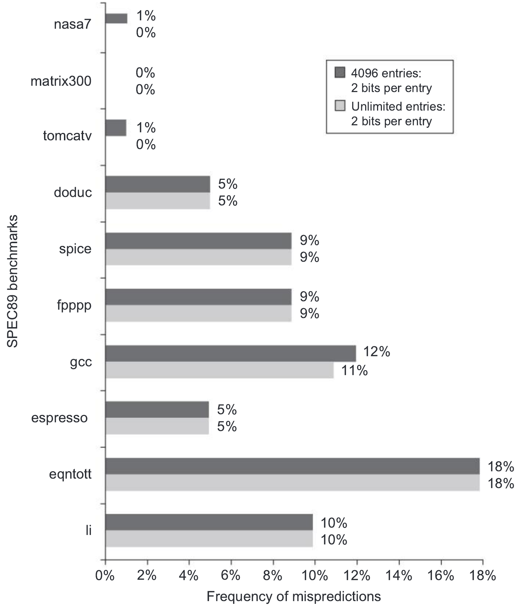

C.2 流水线的主要障碍——流水线冒险
有些情况会使指令流中的下一条指令无法在指定的时钟周期执行，这些情况称为冒险（hazard）。冒险使流水线的性能达不到理想的加速比。冒险分为三类：
- 结构冒险（structural hazard）由资源冲突引起：指令重叠执行时，硬件无法同时支持所有可能的指令组合。现代处理器中的结构冒险主要出现在使用较少的专用功能部件上，例如浮点除法或其他执行时间长的复杂指令。只要程序员和编译器编写者知道这些指令的吞吐率较低，结构冒险就不是影响性能的主要因素。因此，我们不在这种少见的情形上多花篇幅，而是集中讨论另外两种常见得多的冒险。
- 数据冒险（data hazard）由指令之间的依赖引起：一条指令要用前面某条指令的结果，而流水线中指令的重叠执行把这种依赖暴露了出来。
- 控制冒险（control hazard）由转移指令以及其他改变 PC 的指令的流水化引起。
流水线出现冒险时，可能必须停顿（stall）。避开冒险的办法，往往是让流水线中的一部分指令继续执行，另一部分推迟执行。本附录讨论的流水线是这样处理的：一条指令停顿时，比它晚发射的指令在流水线中走得没有它远，也一起停顿；比它早发射的指令走得更远，必须继续执行，否则冒险永远无法消除。因此，停顿期间不取新指令。本节会用几个例子说明流水线停顿的过程。不必担心，它们并没有听上去那么复杂！
有停顿时流水线的性能
停顿使流水线的性能低于理想性能。下面从前一节的公式出发，推导流水线实际加速比的简单公式：
\[ \begin{aligned} \text{流水线加速比} &= \frac{\text{非流水线的平均指令时间}}{\text{流水线的平均指令时间}} \\ &= \frac{\text{非流水线的 CPI} \times \text{非流水线的时钟周期}}{\text{流水线的 CPI} \times \text{流水线的时钟周期}} \\ &= \frac{\text{非流水线的 CPI} \times \text{非流水线的时钟周期}}{\text{流水线的 CPI} \times \text{流水线的时钟周期}} \end{aligned} \]
流水线的作用既可以看作降低 CPI，也可以看作缩短时钟周期。比较流水线习惯上用 CPI，所以我们先按这种看法计算。流水线处理器的理想 CPI 几乎总是 1，因此流水线的 CPI 为
\[ \begin{aligned} \text{流水线的 CPI} &= \text{理想 CPI} + \text{每条指令的流水线停顿时钟周期数} \\ &= 1 + \text{每条指令的流水线停顿时钟周期数} \end{aligned} \]
如果不计流水化带来的时钟周期开销，并假定各流水段完全平衡，两种处理器的时钟周期就可以相等，于是
\[ \text{加速比} = \frac{\text{非流水线的 CPI}}{1 + \text{每条指令的流水线停顿周期数}} \]
一种重要的简单情形是：所有指令的周期数相同，而且都等于流水段数。流水段数也称为流水线深度。这时非流水线的 CPI 就等于流水线深度，于是
\[ \text{加速比} = \frac{\text{流水线深度}}{1 + \text{每条指令的流水线停顿周期数}} \]
如果没有停顿，就得到一个直观的结论：流水线能把性能提高到原来的「流水线深度」倍。
数据冒险
流水线让指令重叠执行，一个主要影响是改变了指令之间的相对时序。这种重叠带来了数据冒险和控制冒险。所谓数据冒险，就是流水线改变了读写操作数的先后顺序，使它不同于非流水线处理器顺序执行这些指令时的顺序。假定按程序顺序，指令 i 在指令 j 之前，两条指令都使用寄存器 x，那么 i 和 j 之间可能出现三种冒险：
- 写后读（RAW，Read After Write）冒险：这是最常见的一种，即指令 j 在指令 i 写寄存器 x 之前就读了 x。如果不加防止，指令 j 就会用到错误的 x 值。
- 读后写（WAR，Write After Read）冒险：指令 i 在指令 j 写寄存器 x 之后才读 x，于是指令 i 会用到错误的 x 值。简单的五段整数流水线中不可能出现 WAR 冒险，但指令重新排序后就会出现，后面在 C.7 节讨论动态调度流水线时会看到。
- 写后写（WAW，Write After Write）冒险：指令 i 在指令 j 写寄存器 x 之后才写 x，于是寄存器 x 此后保存的是错误的值。简单的五段整数流水线中同样不可能出现 WAW 冒险，但指令重新排序或指令执行时间长短不一时就会出现，后面会看到。
第 3 章会更详细地讨论数据相关和冒险，这里只讨论 RAW 冒险。
考虑以下指令在流水线中的执行：
add x1,x2,x3
sub x4,x1,x5
and x6,x1,x7
or x8,x1,x9
xor x10,x1,x11add 后面的指令都要用 add 的结果。如图 C.4 所示，add 在 WB 段才写入 x1，sub 却在自己的 ID 段就要读 x1，于是出现 RAW 冒险。如果不采取预防措施，sub 就会读到错误的值并使用它。实际上，sub 用到的值甚至是不确定的。我们也许认为可以合理地假定，sub 用的总是 add 之前某条指令赋给 x1 的值，但事实并非总是如此：如果 add 和 sub 之间发生中断，add 的 WB 段就会完成，这时 x1 的值就是 add 的结果。这种无法预测的行为显然不能接受。

add 指令的结果在后面三条指令中使用，引起了冒险，因为直到这几条指令读过寄存器之后，寄存器才被写入。图中标注：Time (in clock cycles) 为时间（以时钟周期计），Program execution order (in instructions) 为程序执行顺序（以指令计），CC 为时钟周期，IM 为指令存储器，Reg 为寄存器堆，DM 为数据存储器；图中的指令按旧版 MIPS 写法标注（DADD R1, R2, R3 等），分别对应正文的 add x1,x2,x3 等指令。and 指令也可能引起 RAW 冒险。从图 C.4 可以看到，x1 要到时钟周期 5 结束时才写完，因此 and 在时钟周期 4 读寄存器，会得到错误的结果。
xor 指令在时钟周期 6 读寄存器，这时寄存器已经写过，因此能正确执行。or 指令也不会引起冒险，因为我们在周期的前半段写寄存器堆、后半段读寄存器堆。注意，xor 仍然依赖于 add，只是不再引起冒险，第 3 章会更详细地讨论这个问题。
sub 和 and 涉及的冒险会引起停顿，下一小节介绍消除这些停顿的技术。
用前递减少数据冒险停顿
图 C.4 中的问题可以用一种简单的硬件技术解决，称为前递（forwarding），也称旁路（bypassing），有时也称短路（short-circuiting）。前递的关键在于：add 真正产生结果之前，sub 其实并不需要这个结果。只要能把结果从 add 存放它的流水线寄存器直接送到 sub 需要它的地方，就不必停顿。按照这一思路，前递的工作方式如下：
- EX/MEM 和 MEM/WB 两个流水线寄存器中的 ALU 结果总是反馈到 ALU 的输入端。
- 如果前递硬件检测到，前一个 ALU 操作写的寄存器正是当前 ALU 操作的某个源寄存器，控制逻辑就选用前递过来的结果作为 ALU 的输入，而不用从寄存器堆读出的值。
注意，采用前递时，如果 sub 停顿，add 就会执行完毕，旁路也就不会启用。两条指令之间发生中断时也是如此。
从图 C.4 的例子可以看出，结果不仅要从紧挨着的前一条指令前递，还可能要从早两个周期开始执行的指令前递。图 C.5 给出了加上旁路通路后的这个例子，并突出了寄存器读写的时序。这段代码可以不停顿地执行。

add 结果的指令通过前递通路避免了数据冒险。sub 和 and 指令的输入从流水线寄存器前递到 ALU 的第一个输入端。or 通过寄存器堆前递得到结果：只要在周期的后半段读寄存器、前半段写寄存器，就很容易做到这一点，寄存器上的虚线表示的就是这种读写方式。注意，前递的结果可以送到 ALU 的任一个输入端；实际上，ALU 的两个输入端可以同时使用前递来的输入，它们既可以来自同一个流水线寄存器，也可以来自不同的流水线寄存器。例如，and 指令如果是 and x6,x1,x4，就会出现这种情况。图中标注的含义与图 C.4 相同。前递还可以推广，把结果直接送给需要它的功能部件。也就是说，结果不只是从一个部件的输出前递回同一部件的输入端，还可以从对应一个部件输出的流水线寄存器，前递到另一个部件的输入端。以下面的序列为例：
add x1,x2,x3
ld x4,0(x1)
sd x4,12(x1)要让这个序列不停顿，需要把 ALU 和存储器部件的输出值从流水线寄存器前递到 ALU 和数据存储器的输入端。图 C.6 画出了这个例子的所有前递通路。

ld x4,0(x1) 和 sd x4,12(x1)。需要停顿的数据冒险
遗憾的是，并不是所有潜在的数据冒险都能用旁路解决。考虑下面的指令序列：
ld x1,0(x2)
sub x4,x1,x5
and x6,x1,x7
or x8,x1,x9图 C.7 给出了这个例子中带旁路通路的流水线数据通路。这种情况与两个 ALU 操作紧挨着执行不同：ld 要到时钟周期 4（它的 MEM 周期）结束时才得到数据，而 sub 在这个时钟周期开始时就需要数据。因此，使用 load 结果引起的数据冒险，无法用简单的硬件完全消除。从图 C.7 可以看出，这样的前递通路必须在时间上倒着走，而计算机设计者还没有这种能力！and 在 load 之后 2 个时钟周期才开始，我们可以把结果从流水线寄存器立即前递给 ALU 供它使用。or 指令通过寄存器堆得到这个值，同样没有问题。但对 sub 来说，前递的结果到得太晚：结果在时钟周期结束时才到，而 sub 在周期开始时就需要它。

and 和 or 指令，但不能旁路给 sub，因为那意味着要在「负的时间」里前递结果。图中标注的含义与图 C.4 相同，LD R1, 0(R2) 对应正文的 ld x1,0(x2)。load 指令有一段延迟，单靠前递无法消除。为此需要增加一种称为流水线互锁（pipeline interlock）的硬件，保证指令按正确的方式执行。一般来说，流水线互锁检测到冒险后就让流水线停顿，直到冒险消除为止。在这个例子中，互锁从要使用数据的那条指令开始让流水线停顿，直到源指令产生出数据。和结构冒险时一样，流水线互锁引入了一个停顿，也称气泡（bubble）。停顿指令的 CPI 增加的值就是停顿的长度，这里是 1 个时钟周期。
图 C.8 用流水段名称画出了插入停顿前后的流水线。停顿使 sub 及其后的指令推后一个周期，于是 and 的前递改为经过寄存器堆，or 则根本不需要前递。插入气泡后，完成这个序列的周期数增加了 1：时钟周期 4 没有启动任何指令（周期 6 也没有任何指令完成）。
图 C.8 上半部分说明了为什么需要停顿：load 的 MEM 周期产生的值是 sub 的 EX 周期需要的，而这两个周期同时发生。下半部分说明，插入一个停顿就能解决这个问题。
| 指令 | 时钟 1 | 时钟 2 | 时钟 3 | 时钟 4 | 时钟 5 | 时钟 6 | 时钟 7 | 时钟 8 | 时钟 9 |
|---|---|---|---|---|---|---|---|---|---|
ld x1,0(x2) |
IF | ID | EX | MEM | WB | ||||
sub x4,x1,x5 |
IF | ID | EX | MEM | WB | ||||
and x6,x1,x7 |
IF | ID | EX | MEM | WB | ||||
or x8,x1,x9 |
IF | ID | EX | MEM | WB | ||||
ld x1,0(x2) |
IF | ID | EX | MEM | WB | ||||
sub x4,x1,x5 |
IF | ID | 停顿 | EX | MEM | WB | |||
and x6,x1,x7 |
IF | 停顿 | ID | EX | MEM | WB | |||
or x8,x1,x9 |
停顿 | IF | ID | EX | MEM | WB |
转移冒险
在我们的 RISC-V 流水线中，控制冒险造成的性能损失可能比数据冒险更大。转移指令执行时，可能把 PC 改成当前值加 4 以外的值，也可能不改。前面讲过，转移指令把 PC 改为目标地址，称为成功（taken）的转移；顺序往下执行，称为不成功（not taken 或 untaken）的转移。如果指令 i 是一条成功的转移，PC 通常要到 ID 段结束、地址计算和比较完成之后才会改变。
图 C.9 表明，处理转移最简单的方法是：一旦在 ID 段（指令译码时）发现转移指令，就重新取它后面的那条指令。第一个 IF 周期从不做有用的工作，实际上就是一个停顿。读者也许已经注意到，如果转移不成功，重复 IF 段并无必要，因为取到的本来就是正确的指令。下面很快会介绍几种利用这一点的方案。
图 C.9 在五段流水线中，转移指令引起一个周期的停顿。转移指令后面的那条指令已经取出，但不予理会，等转移目标确定后再重新取指。显然，如果转移不成功，转移后继指令的第二个 IF 是多余的。这个问题稍后会解决。
| 指令 | 时钟 1 | 时钟 2 | 时钟 3 | 时钟 4 | 时钟 5 | 时钟 6 | 时钟 7 |
|---|---|---|---|---|---|---|---|
| 转移指令 | IF | ID | EX | MEM | WB | ||
| 转移后继指令 | IF | IF | ID | EX | MEM | WB | |
| 转移后继指令 + 1 | IF | ID | EX | MEM | |||
| 转移后继指令 + 2 | IF | ID | EX |
每条转移指令停顿一个周期，视转移频度不同，会带来 10% 到 30% 的性能损失。因此，下面研究几种应对这一损失的技术。
减少流水线的转移开销
转移延迟会引起流水线停顿，处理办法有很多，本小节讨论四种简单的编译时方案。这四种方案对转移的处理都是静态的：每条转移指令的处理方式在整个执行过程中固定不变。软件可以根据对硬件方案和转移行为的了解，尽量减少转移开销。之后我们再介绍由硬件动态预测转移行为的方案，第 3 章还会介绍更强的动态转移预测硬件技术。
最简单的方案是冻结（freeze）或清空（flush）流水线：在转移目标确定之前，把转移指令后面的指令全部保持不动或删除。这种方案的长处主要是硬件和软件都简单。图 C.9 中的流水线用的就是这种方案。这时转移开销是固定的，软件无法减少。
另一种方案性能更高，复杂程度只略有增加：把每条转移指令都当作不成功的转移，硬件照常往下执行，就像没有执行这条转移指令一样。这时必须注意，在确切知道转移结果之前，不能改变处理器的状态。这种方案的复杂之处在于：必须知道指令什么时候可能改变状态，以及怎样「撤销」这种改变。
在简单的五段流水线中，这种预测不成功（predicted-not-taken 或 predicted-untaken）方案的实现办法是：把转移指令当作普通指令，继续取后面的指令。流水线看上去就像什么特别的事都没有发生。但如果转移成功，就要把已经取出的指令变成空操作，并从目标地址重新开始取指。图 C.10 画出了这两种情况。
图 C.10 预测不成功方案，以及转移不成功（上）和转移成功（下）时的流水线执行过程。如果在 ID 段确定转移不成功，我们就取顺序往下的指令，照常执行。如果在 ID 段确定转移成功，就从转移目标重新开始取指，于是转移指令后面的所有指令都停顿 1 个时钟周期。
| 指令 | 时钟 1 | 时钟 2 | 时钟 3 | 时钟 4 | 时钟 5 | 时钟 6 | 时钟 7 | 时钟 8 | 时钟 9 |
|---|---|---|---|---|---|---|---|---|---|
| 不成功的转移指令 | IF | ID | EX | MEM | WB | ||||
| 指令 i + 1 | IF | ID | EX | MEM | WB | ||||
| 指令 i + 2 | IF | ID | EX | MEM | WB | ||||
| 指令 i + 3 | IF | ID | EX | MEM | WB | ||||
| 指令 i + 4 | IF | ID | EX | MEM | WB | ||||
| 成功的转移指令 | IF | ID | EX | MEM | WB | ||||
| 指令 i + 1 | IF | 空闲 | 空闲 | 空闲 | 空闲 | ||||
| 转移目标 | IF | ID | EX | MEM | WB | ||||
| 转移目标 + 1 | IF | ID | EX | MEM | WB | ||||
| 转移目标 + 2 | IF | ID | EX | MEM | WB |
还有一种方案是把每条转移指令都当作成功的转移：转移指令一译码、目标地址一算出，就假定转移成功，从目标处开始取指令并执行。转移确实成功时，这种方案能节省一个周期，因为 ID 段结束时就知道目标地址了，比在 ALU 段知道转移条件是否满足早一个周期。无论预测成功还是预测不成功，编译器都可以安排代码，让最常走的路径与硬件的选择一致，从而提高性能。
第四种方案称为延迟转移（delayed branch），早期的 RISC 处理器大量采用。转移延迟为 1 时，延迟转移的执行顺序是
branch instruction # 转移指令
sequential successor_1 # 顺序后继指令 1
branch target if taken # 转移成功时的转移目标顺序后继指令位于转移延迟槽（branch delay slot）中，不论转移是否成功都会执行。图 C.11 给出了五段流水线采用延迟转移时的行为。转移延迟可以大于 1，但实际上几乎所有采用延迟转移的处理器都只延迟一条指令；流水线潜在的转移开销更大时，就改用其他技术。编译器的任务是让后继指令有效而且有用。
在硬件预测代价太高的年代，延迟转移对短而简单的流水线很有用；但有了动态转移预测，这种技术反而使实现更复杂。因此，RISC-V 恰当地舍弃了延迟转移。
转移方案的性能
这些方案的实际性能怎样？假定理想 CPI 为 1，计入转移开销后，流水线的实际加速比为
\[ \text{流水线加速比} = \frac{\text{流水线深度}}{1 + \text{转移引起的流水线停顿周期数}} \]
由于
\[ \text{转移引起的流水线停顿周期数} = \text{转移频度} \times \text{转移开销} \]
可得
\[ \text{流水线加速比} = \frac{\text{流水线深度}}{1 + \text{转移频度} \times \text{转移开销}} \]
图 C.11 无论转移成功与否，延迟转移的行为都相同。延迟槽中的指令都要执行（采用延迟转移的 RISC 体系结构大多只有一个延迟槽）。转移不成功时，从转移延迟指令的下一条指令继续执行；转移成功时，从转移目标继续执行。如果延迟槽中的指令本身也是转移指令，含义就不明确了：转移不成功时，延迟槽中的这条转移该怎么处理？为了避免这种混乱，采用延迟转移的体系结构往往不允许在延迟槽中放转移指令。
| 指令 | 时钟 1 | 时钟 2 | 时钟 3 | 时钟 4 | 时钟 5 | 时钟 6 | 时钟 7 | 时钟 8 | 时钟 9 |
|---|---|---|---|---|---|---|---|---|---|
| 不成功的转移指令 | IF | ID | EX | MEM | WB | ||||
| 转移延迟指令（\(i+1\)） | IF | ID | EX | MEM | WB | ||||
| 指令 \(i+2\) | IF | ID | EX | MEM | WB | ||||
| 指令 \(i+3\) | IF | ID | EX | MEM | WB | ||||
| 指令 \(i+4\) | IF | ID | EX | MEM | WB |
| 指令 | 时钟 1 | 时钟 2 | 时钟 3 | 时钟 4 | 时钟 5 | 时钟 6 | 时钟 7 | 时钟 8 | 时钟 9 |
|---|---|---|---|---|---|---|---|---|---|
| 成功的转移指令 | IF | ID | EX | MEM | WB | ||||
| 转移延迟指令（\(i+1\)） | IF | ID | EX | MEM | WB | ||||
| 转移目标 | IF | ID | EX | MEM | WB | ||||
| 转移目标 + 1 | IF | ID | EX | MEM | WB | ||||
| 转移目标 + 2 | IF | ID | EX | MEM | WB |
转移频度和转移开销都可能同时包含无条件转移和条件转移两部分。条件转移出现得更频繁，因此占主要地位。
例题 MIPS R4000 及后来的 RISC 处理器采用更深的流水线，至少要经过三个流水段才能得到转移目标地址，还要再过一个周期才能求出转移条件（假定条件比较所用的寄存器不引起停顿）。有了三个流水段的延迟，三种最简单的预测方案的转移开销如图 C.12 所示。
假定各类转移的频度如下，求这种流水线中转移使 CPI 实际增加了多少。
| 转移类型 | 频度 |
|---|---|
| 无条件转移 | 4% |
| 条件转移，不成功 | 6% |
| 条件转移，成功 | 10% |
解答 无条件转移、不成功的条件转移和成功的条件转移，各自的相对频度乘以相应的开销，就得到各项 CPI，结果见图 C.13。
图 C.12 较深流水线中三种最简单的预测方案的转移开销
| 转移方案 | 无条件转移的开销 | 不成功转移的开销 | 成功转移的开销 |
|---|---|---|---|
| 清空流水线 | 2 | 3 | 3 |
| 预测为成功 | 2 | 3 | 2 |
| 预测为不成功 | 2 | 0 | 3 |
图 C.13 较深流水线中三种转移预测方案的 CPI 开销。表中后四列都是转移开销造成的 CPI 增量。
| 转移方案 | 无条件转移 | 不成功的条件转移 | 成功的条件转移 | 全部转移 |
|---|---|---|---|---|
| 事件频度 | 4% | 6% | 10% | 20% |
| 停顿流水线 | 0.08 | 0.18 | 0.30 | 0.56 |
| 预测为成功 | 0.08 | 0.18 | 0.20 | 0.46 |
| 预测为不成功 | 0.08 | 0.00 | 0.30 | 0.38 |
延迟变长以后，各方案之间的差距明显拉大。假定基本 CPI 为 1，并且转移是唯一的停顿来源，那么理想流水线的速度是停顿流水线方案的 1.56 倍；在同样的假定下，预测不成功方案的性能是停顿流水线方案的 1.13 倍。
用预测降低转移代价
流水线越来越深，转移的潜在开销随之增大，延迟转移之类的方案就不够用了，需要用更积极的手段来预测转移。这类方案分为两类：一类是低成本的静态方案，依靠编译时就能得到的信息；另一类是动态策略，根据程序运行时的行为预测转移。下面分别讨论。
静态转移预测
提高编译时转移预测准确率的一个关键办法，是利用以前运行时收集的剖析（profile）信息。这种办法之所以有效，关键在于一个现象：转移的行为往往呈双峰分布，即单条转移指令往往明显偏向成功，或者明显偏向不成功。图 C.14 给出了用这种策略预测转移的效果，其中运行程序和收集剖析信息用的是同一组输入数据。其他研究表明，换一组输入，让剖析信息来自另一次运行，基于剖析信息的预测准确率只有很小的变化。

任何转移预测方案的效果都取决于两点：一是方案本身的准确率，二是条件转移的频度。在 SPEC 中，条件转移的频度从 3% 到 24% 不等。整数程序的误预测率较高，而这类程序的转移频度通常也较高，这是静态转移预测的一个主要局限。下一节讨论动态转移预测器，近年来的处理器大多采用这种预测器。
动态转移预测与转移预测缓冲
最简单的动态转移预测方案是转移预测缓冲，也称转移历史表。转移预测缓冲是一个小存储器，用转移指令地址的低位部分作索引，每项有一位，记录这条转移最近是否成功。这是最简单的一种缓冲，没有 tag（标签）。只有当转移延迟比计算可能的目标 PC 所需的时间更长时，这种缓冲才能减小转移延迟。
使用这种缓冲，我们其实并不知道预测是否正确，因为这一位可能是另一条低位地址相同的转移指令写进去的。但这并不要紧。预测只是一个提示：先假定它正确，按预测的方向开始取指令；如果后来发现提示是错的，就把预测位取反后写回。
这种缓冲实际上是一个每次访问都命中的 Cache。它的性能取决于两点：一是预测位在多大比例的情况下正好属于我们关心的那条转移，二是对得上时预测有多准确。分析性能之前，先对转移预测方案做一个小而重要的改进，以提高准确率。
这种简单的 1 位预测方案在性能上有一个缺点：一条转移即使几乎总是成功，在它偶尔不成功时，我们也很可能预测错两次，而不是一次，因为第一次误预测把预测位翻转了。
为了弥补这个缺点，常采用 2 位预测方案。在 2 位方案中，预测必须错两次才会改变。图 C.15 给出了 2 位预测方案的有限状态机。

转移预测缓冲有两种实现方式：一是做成一个小的专用「Cache」，在 IF 段用指令地址访问；二是在指令 Cache 的每个块上附加两位，与指令一起取出。如果指令译码后是转移指令，并且预测转移成功，那么一旦知道目标 PC，就从目标处开始取指令；否则继续顺序取指令和执行。预测结果错了，就按图 C.15 修改预测位。
每项 2 位的转移预测缓冲，在实际应用中能达到多高的准确率？图 C.16 表明，对 SPEC89 基准测试程序，4096 项的转移预测缓冲的预测准确率从 99% 以上到 82% 不等，即误预测率为 1%～18%。这里所用的 4K 项缓冲按 2017 年的标准算是小的，缓冲再大一些，结果还会稍好一些。

要开发更多的 ILP，转移预测的准确率就变得至关重要。从图 C.16 可以看出，整数程序的转移频度通常较高，预测器对它们的准确率却低于循环密集的科学计算程序。这个问题有两条解决途径：一是增大缓冲，二是提高每次预测所用方案的准确率。但图 C.17 表明，至少对 SPEC 这类基准测试程序，4K 项缓冲的性能与无限大缓冲相当。图 C.17 的数据清楚地说明，缓冲的命中率不是主要的限制因素。前面也提到，不改变预测器的结构、只增加每个预测器的位数，作用也不大。因此需要研究怎样提高每个预测器的准确率，第 3 章将讨论这个问题。
